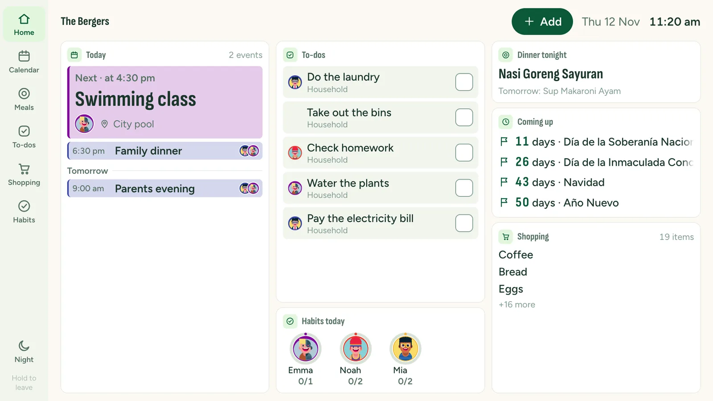

Hang it in the kitchen or hallway. It shows your family's week, meals, lists and habits, and everyone can tick things off as they walk past. Free, with the tablet you already own.

Set the screen timeout (iPad: Auto-Lock) to Never, as in the "Keep the screen on" step for your device. Switch battery saver off.
The browser's saved data was cleared, or the board was opened in another browser or a private window. Connect it again and always open it the same way.
A parent removed the screen, or the parent who connected it left the family. A parent can connect it again.
The device or its browser is too old. Update the browser. On an old Android tablet, try Firefox.
The Wi-Fi is weak at that spot, or the device lets Wi-Fi sleep. Move the router closer or switch Wi-Fi power saving off.
Press and hold Hold to leave for two seconds. If you locked the device (Guided Access, kiosk mode, app pinning), end that lock first.
In the Daili app: Settings → Wall display → Wall screens → Remove. It stops showing your family at once.